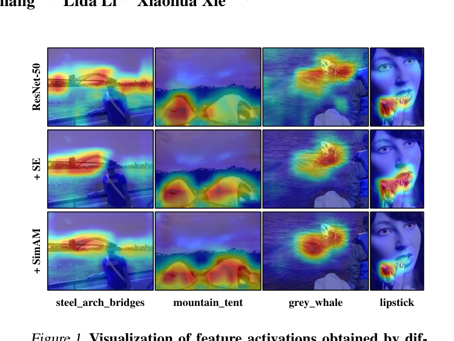
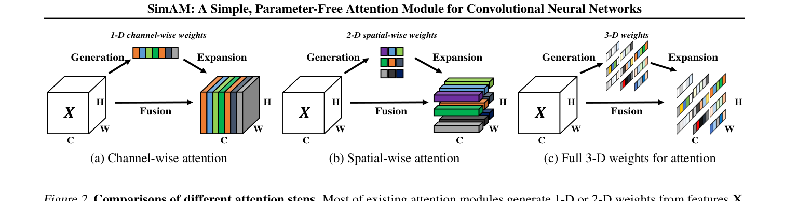
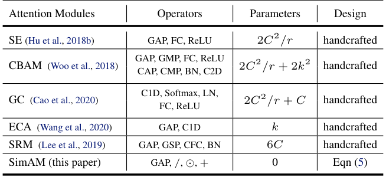
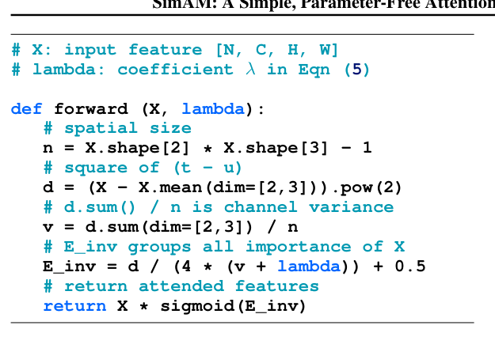
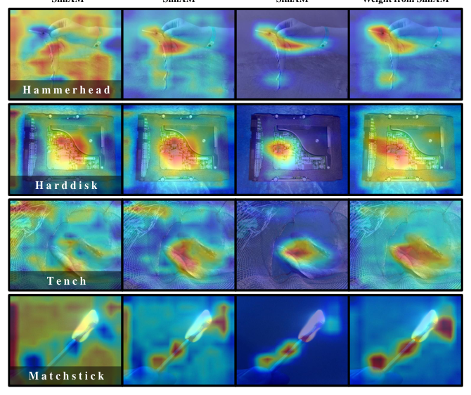
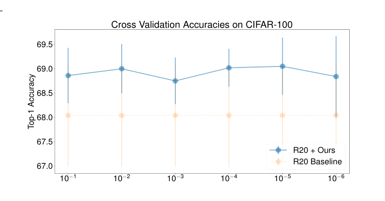
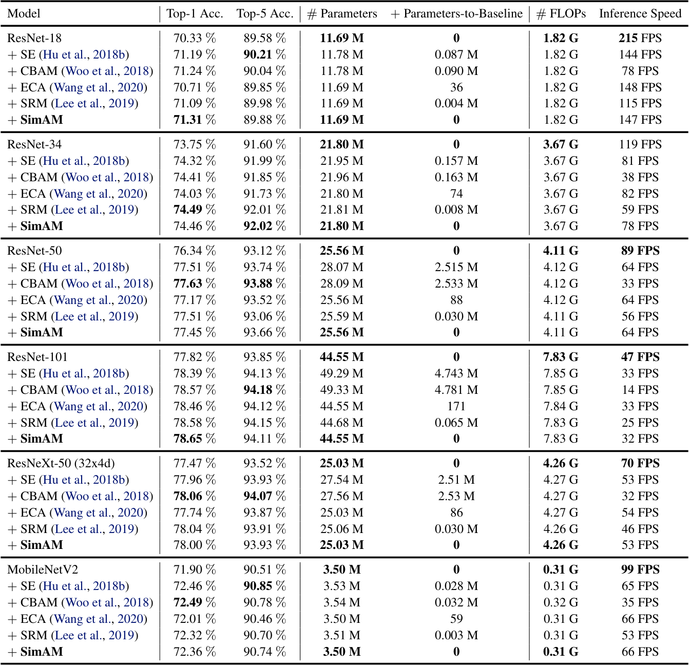
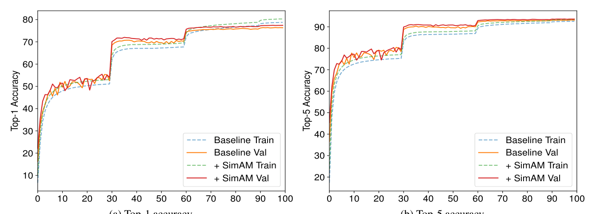

一致设置下训练的 ResNet-50、+SE、+SimAM 三个网络在 ImageNet 验证集上的 Grad-CAM 特征激活。SimAM 帮助网络聚焦于与图像标签接近的主要区域：mountain_tent 一列中帐篷主体被完整高亮；grey_whale 一列中 SE 丢失了鲸鱼的部分主体组件，而 SimAM 仍覆盖完整。
借鉴哺乳动物大脑的空间抑制理论，把神经元重要性形式化为一个能量函数并推导出闭式解 —— 以零附加参数直接推断全 3-D 注意力权重，实现不足十行代码，在分类、检测与分割上取得精度-效率双赢。
受人脑注意力机制启发，提出带完整 3-D 权重的注意力模块，并设计一个能量函数来计算这些权重 —— 不再沿通道或空间单一维度精炼。
为能量函数推导闭式解，加速权重计算并使整个模块保持轻量形态；实现不到十行代码，且不向原网络添加任何参数。
模块中大多数算子都是依据能量函数的解选出的，避免了大量结构调参；集成进多个知名网络后在多类任务上评测，在精度、模型大小与速度三方面均表现优异。
定位声明：本文聚焦的是一个小的即插即用模块，而不是超越现有 ConvNet 的新架构 —— 目标是让已有网络在不做大改动的前提下进一步提升表示能力。
SE 生成 1-D 通道权重、CBAM 生成 2-D 空间权重，把同一通道内或同一空间位置上的所有神经元同等对待 —— 限制了学习「同时在通道与空间上变化」的注意力权重的灵活性。
模块结构由池化类型、全连接层、卷积等一系列手工因素堆叠而成，多数权重计算算法基于无理论依据的启发式，设计缺乏统一原则指导，需要大量工程精力做结构调参。


神经科学依据：在视觉神经科学中，信息量最大的神经元通常是放电模式与周围神经元显著不同的那些；且活跃神经元会抑制周围神经元的活动，即空间抑制（spatial suppression）。显示清晰空间抑制效应的神经元应在视觉处理中被赋予更高优先级 —— 其最简单的实现，就是度量一个目标神经元与其它神经元之间的线性可分性。
| t, xi | 输入特征 X ∈ ℝC×H×W 单个通道内的目标神经元与其它神经元；i 是空间维上的索引，式中所有量都是标量 |
| t̂, x̂i | 对 t 与 xi 的线性变换：t̂ = wtt + bt，x̂i = wtxi + bt；wt、bt 是变换的权重与偏置 |
| M = H × W | 该通道上的神经元数量；yt、yo 是两个不同的目标取值 |
依据 Hillyard 等人的结论，哺乳动物大脑中的注意力调制通常表现为对神经元响应的增益（缩放）效应 —— 因此选用缩放算子而非加法来做特征精炼。
sigmoid 用于限制 E 中过大的取值；因为它是单调函数，所以不会改变各神经元的相对重要性。
等价于用一张与特征图同形状的重要性图对特征做逐点门控，从而完成真 3-D 注意力。除通道均值与方差的计算外，模块内其余运算全部是逐元素操作。

50k 训练 / 10k 验证；每边 zero-padding 4 像素后随机裁 32×32（或水平翻转）。
SGD：momentum 0.9、batch 128、weight decay 0.0005；学习率 0.1，在第 32,000 与 48,000 次迭代除 10（64,000 次后停止除）。
除 WideResNet 用两块 GPU 外均为单卡；λ = 1e-4，用 ResNet-20 在 45k/5k 划分上搜得。
对比 SE、CBAM、ECA、GC（作者公开代码 + 默认设置），每法 5 次取均值±标准差。
1000 类，约 1.2M 训练 / 50K 验证；随机裁 224×224（原图或水平翻转）。
ResNet 系：SGD、batch 256、4 张 Quadro RTX 8000；momentum 0.9、weight decay 1e-4；BN 的批均值方差在每张 GPU 内计算；学习率 0.1，在第 30、60、90 epoch 除 10，共 100 epoch。
MobileNetV2：余弦调度、初始学习率 0.5、weight decay 4e-5、150 epoch。
λ = 0.1：以 ResNet-18 在半分辨率图像上训 50 epoch（lr 在 15/30/45 epoch 衰减）、每个取值跑 3 次搜得，整个搜索不到一周。
检测器为 Faster R-CNN 与 Mask R-CNN + FPN；主要与 SE 及基线模型对比。
骨干先在 ImageNet-1K 预训练再迁移到 COCO，在 coco 2017 train 上训练、coco 2017 val 上评测。
用 mmdetection 在 4 张 GPU 上以 batch 8（每卡 2）训练，按线性缩放规则设初始学习率 0.01，其余超参沿用各检测器默认设置。
所有对比方法均用 PyTorch 在一致设置下重新实现；ImageNet 上未纳入 GC，因其结果来自与标准设置差异很大的训练流程。





从神经科学的空间抑制理论出发，把神经元重要性形式化为能量函数的线性可分性，使注意力模块的设计有可解释的统一原则、避免手工结构堆叠，思路新颖、耳目一新。
为能量函数推导闭式解，以零附加参数推断真 3-D 注意力权重，实现不到十行代码，推理速度与 SE 和 ECA 同档，计算效率可供参考。
在 CIFAR 与 ImageNet 分类、COCO 检测与实例分割上跨多种网络系统验证，配合 Grad-CAM 可视化与 λ 敏感性分析，小网络上增益尤为突出，实验丰富、说服力强。